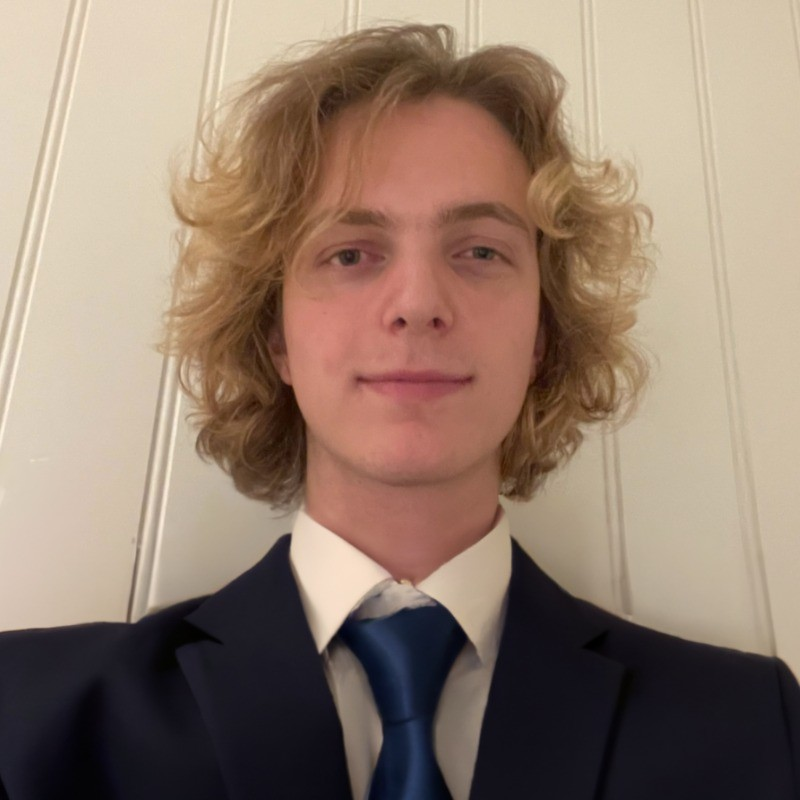

Infinigrid
Produksjons-ML for det norske strømnettet. Prognosemodeller som overvåker det elektriske systemet og varsler om risiko før den slår inn. Tidsserier i nettskala, satt i drift.
dypdykk →maskinlæring · maskinvare · systemer
Maskinlæringsingeniør med maskinvarebakgrunn. 12+ år erfaring med produksjonssystemer og hobbyprosjekter. Vekt på ren kode og solide systemer.
Jeg bygger
Tre å se på først.
Produksjons-ML for det norske strømnettet. Prognosemodeller som overvåker det elektriske systemet og varsler om risiko før den slår inn. Tidsserier i nettskala, satt i drift.
dypdykk →Industriell optimering for en av verdens største aluminiumsprodusenter. En blanding av maskinlæring, klassisk optimering og den anvendte matematikken som binder de to sammen.
NDA · detaljer på forespørselTilpasser en forhåndstrent vision transformer til en ny oppgave med low-rank-adaptere i attention-lagene. Halve poenget er å få det til å virke, andre halvparten en unnskyldning for å skjønne hvorfor det virker.
dypdykk →Et utvalg, fra 2002 og fram til i dag.
Størrelse = betydning. Hold musepekeren over for forhåndsvisning, klikk for dypdykket.
Laster tidslinje…
Tidslinjen viser bare noen av prosjektene jeg har gjort ferdig. Som de fleste ingeniører synes jeg det er morsommere å starte noe nytt enn å fullføre det gamle, og mye av det jeg kan, sitter i prosjektene som aldri kom helt i mål.
FPGA-designet jeg fikk syntetisert, men aldri testet på maskinvare. Lydpluginen jeg la fra meg samme sekund jeg knakk koden. Modellen jeg trente helt til loss-kurven fortalte meg det jeg trengte å vite, før jeg gikk videre. Dette er ikke bortkastet tid. Det er eksperimentene som lærte meg teknikkene jeg senere brukte i prosjektene som faktisk ble levert.
Hvem, hva og hvorfor de to sidene passer sammen.

Jeg begynte å kode da jeg var ni. Faren min er programvareutvikler og ga det videre tidlig. Det første jeg husker at jeg ble irritert over, var en programmeringstime som viste seg å være dra-og-slipp-blokker i stedet for et ekte tastatur.
I dag jobber jeg på tre fronter. Maskinlæring for norsk offentlig sektor, industri, og nå Infinigrid, et oppstartsselskap som bygger prognosemodeller for strømnettet. Full-stack slipt i Go og Nuxt: backender, dashbord, datapipelines. Maskinvare: loddede analoge front-ender, FPGA-filtre, og en byggesett-3D-printer som til slutt tegnet sitt eget portrett.
De to sidene henger sammen. CNN-et som klassifiserer et analogt signal, er bare så godt som op-amp-en foran ADC-en. FPGA-et som filtrerer en transduser, betyr lite hvis det ikke finnes en pipeline videre nedstrøms. Det er akkurat i det grensesnittet jeg liker å jobbe.
Verktøyene sortert etter hvor de sitter i kjeden.
Fra fysisk signal til rene data.
Der læringen skjer.
Backender, infrastruktur, den uglamorøse ryggraden.
Flaten brukeren faktisk møter.
dykker dypere i nå prognoser i nettskala kausal inferens reguleringssystemer
Innboksen er åpen.
Tar gjerne en prat om forskning, maskinvare eller ML i nettskala, særlig der signalkjeden møter modellen.